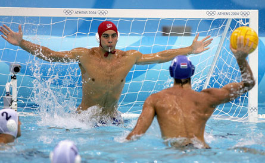
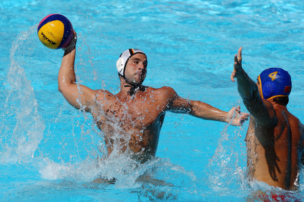

Common Information on Water Polo
Water Polo is a sport that is not really that popular. But when you play Water Polo it is guaranteed to give you quite a workout. One of the techniques to stay afloat or treading water is "Eggbeating". This motion is the movement of your legs in a counter-clockwise motion. To play Water polo you have to be good at swimming and you have to be able to fight through the relentless pain that is a part of this contact sport. It is common to come out a game with scratches and bruises. People out of competitiveness are trying to get the ball and score. To people don't play, it is like soccer and rugby in the water. Instead of a basket there is a goal and a goalie. For a goalie to be good you have to be good at "Eggbeating" and our reflexes have to be quick.
 